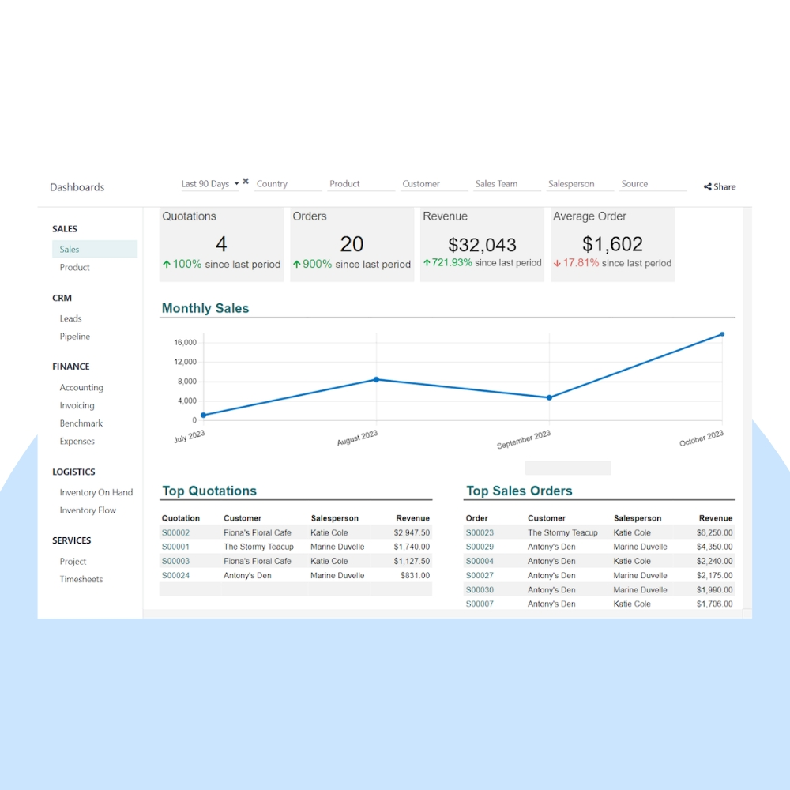
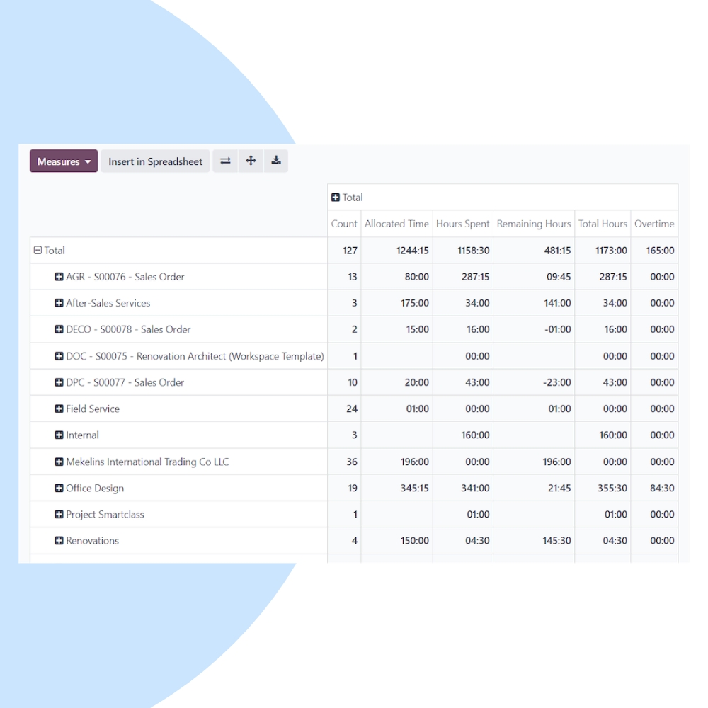
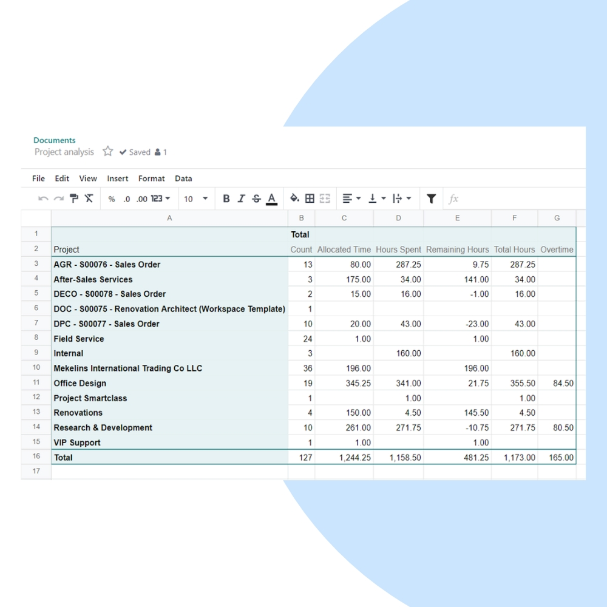

Turn raw business data into actionable insights with Odoo Spreadsheet. We help you build real-time dashboards, automated reports, and powerful BI models directly connected to your Odoo data.
We design intelligent spreadsheets connected directly to your Odoo ERP. Build KPIs, financial models, and operational dashboards with live data updates and advanced formulas.


Our implementation ensures decision-makers get accurate, real-time insights without relying on external BI tools or manual exports.
Reports update automatically with real-time Odoo data.
Eliminate Excel exports and third-party BI software.
Use spreadsheet formulas, pivots, and dynamic tables.
Control who sees what with secure permissions.
Analyze data across Sales, Accounting, Inventory, and HR.
Turn complex data into clear, actionable insights.
We continuously improve your BI setup to ensure reports stay relevant, fast, and aligned with evolving business goals.
